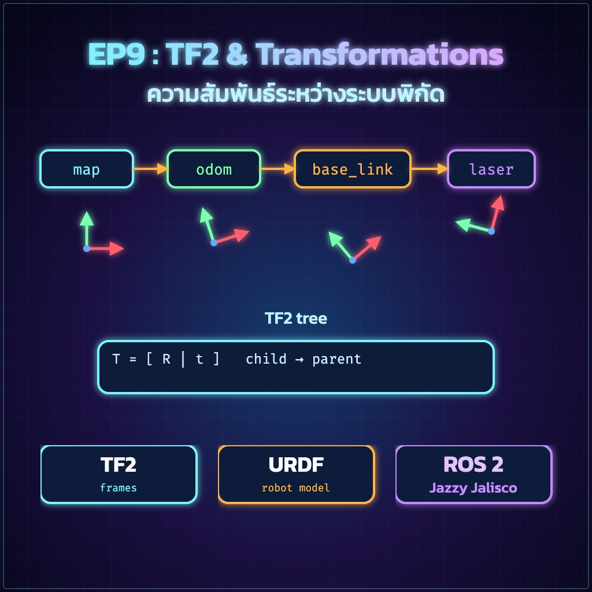
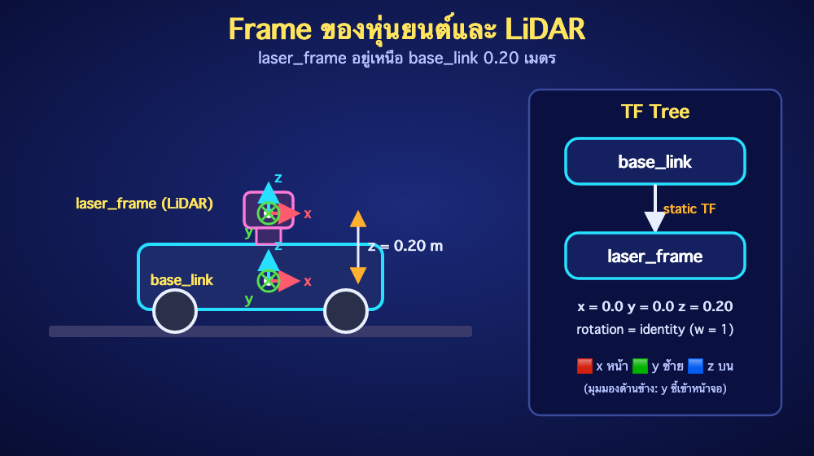

ย้อนกลับ

EP9
TF2 และ Coordinate Frames
"ROS 2 Jazzy • สร้างความสัมพันธ์ base_link → laser_frame อย่างถูกต้อง"
🎯 จุดประสงค์การเรียนรู้
- อธิบาย Parent/Child Frame และ TF Tree ได้
- แยก Static Transform กับ Dynamic Transform ได้
- สร้าง Static Transform ด้วย CLI และ Python ได้
- ตรวจสอบด้วย
tf2_echo, view_frames และ RViz2 ได้
1. TF2 คืออะไร?
TF2 เก็บความสัมพันธ์ของระบบพิกัดตามเวลา ตัวอย่าง Mobile Robot ที่พบบ่อยคือ map → odom → base_link → laser_frame
| Frame | ความหมาย |
|---|
| map | กรอบพิกัดโลกจากระบบ Localization |
| odom | กรอบพิกัดต่อเนื่องจาก Odometry แต่อาจสะสม Drift |
| base_link | จุดอ้างอิงหลักของตัวหุ่นยนต์ |
| laser_frame | จุดอ้างอิงของ LiDAR |
เลือก Broadcaster ให้ถูกชนิด
ชิ้นส่วนที่ยึดติดคงที่ เช่น LiDAR กับฐาน ใช้ StaticTransformBroadcaster หรือ static_transform_publisher ส่วนข้อต่อ/ฐานที่เคลื่อนที่ตามเวลาจึงใช้ TransformBroadcaster

2. ทดลอง Static Transform ด้วย CLI
ตัวอย่าง LiDAR อยู่เหนือ base_link 0.20 เมตร ไม่มีการหมุน:
source /opt/ros/jazzy/setup.bash
ros2 run tf2_ros static_transform_publisher \
--x 0.0 --y 0.0 --z 0.20 \
--yaw 0.0 --pitch 0.0 --roll 0.0 \
--frame-id base_link \
--child-frame-id laser_frame
หน่วยระยะเป็นเมตร และมุมเป็นเรเดียน การใช้ flags ช่วยลดความสับสนเรื่องลำดับอาร์กิวเมนต์
3. ตรวจสอบจาก Terminal
# Terminal ใหม่
source /opt/ros/jazzy/setup.bash
# แสดง Transform ระหว่างสอง Frame
ros2 run tf2_ros tf2_echo base_link laser_frame
# สร้างไฟล์ frames.pdf
ros2 run tf2_tools view_frames
# ตรวจ Topic ของ TF
ros2 topic echo /tf_static --once
✅ Expected Result
tf2_echo แสดง Translation z ใกล้ 0.2, Rotation เป็น Identity และ frames.pdf มีลูกศร base_link → laser_frame
4. สร้าง Python Package
mkdir -p ~/ros2_ws/src
cd ~/ros2_ws/src
ros2 pkg create --build-type ament_python brobot_tf \
--dependencies rclpy tf2_ros geometry_msgs
5. เขียน Static TF Node
สร้างไฟล์ ~/ros2_ws/src/brobot_tf/brobot_tf/static_laser_tf.py
import rclpy
from rclpy.node import Node
from geometry_msgs.msg import TransformStamped
from tf2_ros.static_transform_broadcaster import StaticTransformBroadcaster
class StaticLaserTF(Node):
def __init__(self):
super().__init__('static_laser_tf')
self.broadcaster_ = StaticTransformBroadcaster(self)
transform = TransformStamped()
transform.header.stamp = self.get_clock().now().to_msg()
transform.header.frame_id = 'base_link'
transform.child_frame_id = 'laser_frame'
transform.transform.translation.x = 0.0
transform.transform.translation.y = 0.0
transform.transform.translation.z = 0.20
# ไม่มีการหมุน: Quaternion เอกลักษณ์
transform.transform.rotation.x = 0.0
transform.transform.rotation.y = 0.0
transform.transform.rotation.z = 0.0
transform.transform.rotation.w = 1.0
self.broadcaster_.sendTransform(transform)
self.get_logger().info('Published base_link -> laser_frame')
def main(args=None):
rclpy.init(args=args)
node = StaticLaserTF()
try:
rclpy.spin(node)
except KeyboardInterrupt:
pass
finally:
node.destroy_node()
rclpy.shutdown()
if __name__ == '__main__':
main()
🔍 อธิบาย Code
StaticTransformBroadcaster ส่งข้อมูลผ่าน /tf_static ซึ่งเก็บค่าแบบ transient local- Frame ID ห้ามขึ้นต้นด้วย
/ และต้องตั้งชื่อสม่ำเสมอทั้งระบบ
- Quaternion ที่ไม่มีการหมุนต้องเป็น
x=0, y=0, z=0, w=1 ไม่ใช่ทุกค่าเป็นศูนย์
- Static Transform ส่งครั้งเดียว ไม่ต้องสร้าง Timer 10 Hz
6. ลงทะเบียน Entry Point
แก้ setup.py:
entry_points={
'console_scripts': [
'static_laser_tf = brobot_tf.static_laser_tf:main',
],
},
7. Build และ Run
cd ~/ros2_ws
rosdep install --from-paths src --ignore-src -r -y
colcon build --symlink-install --packages-select brobot_tf
source install/setup.bash
ros2 run brobot_tf static_laser_tf
8. ตรวจใน RViz2
rviz2
- ตั้ง Fixed Frame เป็น
base_link
- Add → TF
- Add → LaserScan เมื่อมี LiDAR และเลือก Topic ให้ถูก
- ตรวจว่า
laser_frame อยู่สูงกว่า base_link 0.20 เมตร
🧪 LAB 9.1 — Camera Frame
สร้าง Static Transform base_link → camera_link โดยกล้องอยู่หน้า 0.15 เมตรและสูง 0.30 เมตร จากนั้นยืนยันด้วย tf2_echo และ frames.pdf
เกณฑ์ผ่าน: TF Tree ไม่ขาด, ไม่มี Frame ซ้ำ และค่าระยะตรงกับโจทย์
⚠️ Common Problems
| อาการ | แนวทางแก้ |
|---|
| Invalid frame ID | ตรวจชื่อ Frame ไม่ว่างและไม่ขึ้นต้นด้วย / |
| Quaternion malformed | ใช้ Quaternion ที่ Normalize แล้ว; ไม่หมุนใช้ w=1 |
| RViz2 ขึ้น No transform | ตรวจ Fixed Frame, Topic frame_id และใช้ tf2_echo |
| มีหลาย Parent สำหรับ Child เดียว | ให้หนึ่ง Child Frame มี Parent เดียวใน TF Tree |
| Static TF ถูกส่งถี่ตลอด | เปลี่ยนเป็น StaticTransformBroadcaster หรือ CLI static_transform_publisher |